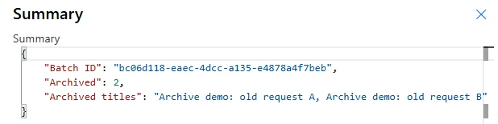

- Power Automate
- Level 8 · Real-world patterns · 5 of 8
Archival and audit logs
Working lists slow down and get harder to use as they grow. Moving finished items to an archive keeps them small. Writing an audit log entry for each change means you can always answer "who or what changed this, and when?".
Archive two completed requests
The demo creates two sample requests with status Completed, then for each one: copies it to an archive list, writes an audit entry with a batch ID, and deletes the original.


The order matters
- Copy to the archive list.
- Log the change in the audit list.
- Delete the original only after both succeeded.
If the copy fails, nothing is lost: the original is still there and the next run tries again. Never delete first.
What an audit entry holds
| Column | Example |
|---|---|
| RequestId | The original item's ID |
| Action | Archived, Status changed, Approved |
| OldValue / NewValue | Pending / Approved |
| BatchId | A guid() shared by every entry from one run |
| Created / Created By | Filled in by SharePoint automatically |
The batch ID ties every entry from one run together, so you can find all changes from a run that went wrong.
New to this? Start from the basics optional
Archive list: a second list with the same key columns, where finished items are moved.
Audit log: an append-only list of changes. Entries are added, never edited.
Build it step by step optional
- Create an archive list with the columns you need to keep, plus OriginalId and ArchivedOn.
- Create an audit list: RequestId, Action, OldValue, NewValue, BatchId.
- Schedule a flow that gets items with
Status eq 'Completed'and Modified older than, say, 90 days. - Loop with concurrency 1: create the archive item, create the audit entry, then delete the original.
- Restrict edit permission on the audit list so people can read it but not change it.
Common mistakes
- Deleting before copying. One failed copy loses data.
- Letting anyone edit the audit list. It is only trustworthy if entries can't be changed.
- Archiving attachments by forgetting them. Copy attachments too, or keep files in a library instead.